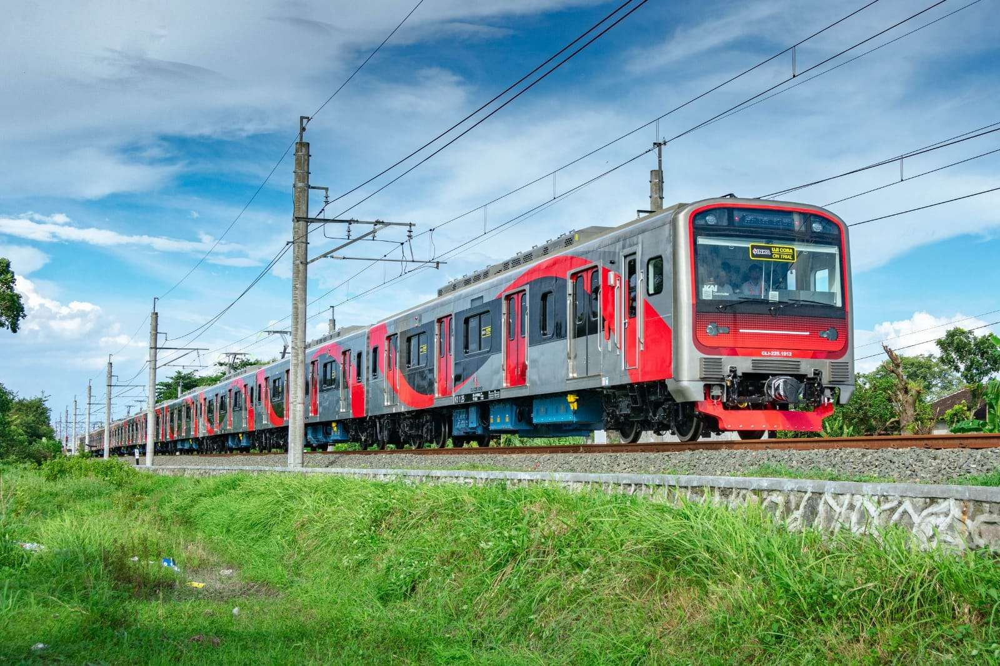
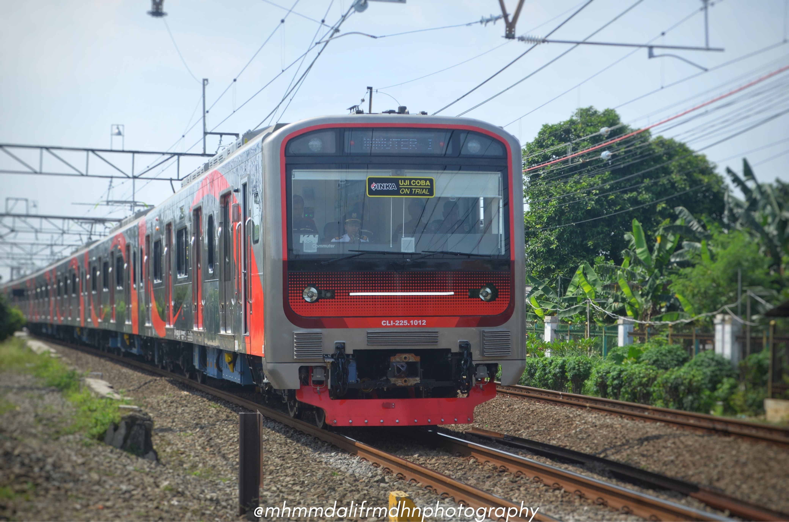

PT INKA MEMBUAT KRL BARU

Berada Di Stasiun Jakarta Kota || Dok Asli - @mhmmdalifrmdhn
Anak usaha PT Kereta Api Indonesia (Persero), KAI Commuter menerima satu rangkaian sarana Kereta Rel Listrik (KRL) terbaru produksi PT Industri Kereta Api (INKA) yang telah tiba di Jakarta secara bertahap sejak Kamis (17/4) hingga Minggu (20/4). Rangkaian KRL ini kini memasuki tahap lanjutan pengujian di lintas Jabodetabek sepanjang 4 ribu kilometer untuk menjamin standar keselamatan dan kualitas yang tinggi.
Vice President Public Relations KAI, Anne Purba, menuturkan bahwa setelah sebelumnya melalui proses Factory Acceptance Test (FAT) serta uji coba dinamis awal di lintas Jogjakarta–Solo pada Maret 2025, rangkaian KRL ini kini memasuki tahap lanjutan pengujian di lintas Jabodetabek. Rangkaian uji dinamis tersebut akan mencakup pengujian commissioning, akselerasi, kecepatan maksimum, serta sistem pengereman, sebagai bagian dari proses kalibrasi teknis sebelum sarana ini melayani masyarakat.

Melakukan Serangkaian Uji Coba || Dok Asli - INKA
"Uji dinamis akan dilakukan sejauh 4.000 kilometer untuk memastikan kesiapan sarana dalam beroperasi di lintas padat Jabodetabek. Proses ini akan dilakukan bersama Direktorat Jenderal Perkeretaapian (DJKA) Kementerian Perhubungan guna menjamin standar keselamatan dan kualitas yang tinggi," ungkapnya.

Memasuki Depo KRL Depok || Dok Asli - @mhmmdalifrmdhn
Adapun rangkaian sarana KRL tersebut telah tiba secara bertahap, yaitu enam unit pada Kamis, 17 April 2025, dan enam unit tambahan pada dini hari 20 April 2025. Seluruhnya kini telah dirangkaikan menjadi satu train set utuh berjumlah 12 kereta. Rangkaian ini merupakan bagian dari total 24 train set yang dikontrak KAI Commuter kepada INKA dalam rangka program modernisasi armada.